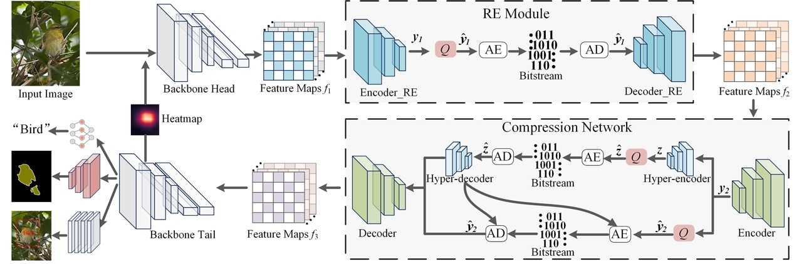
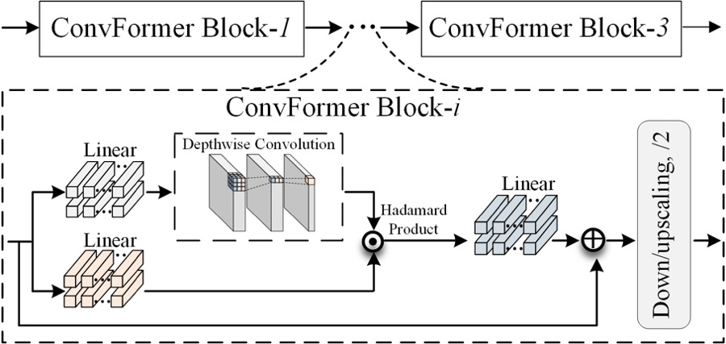
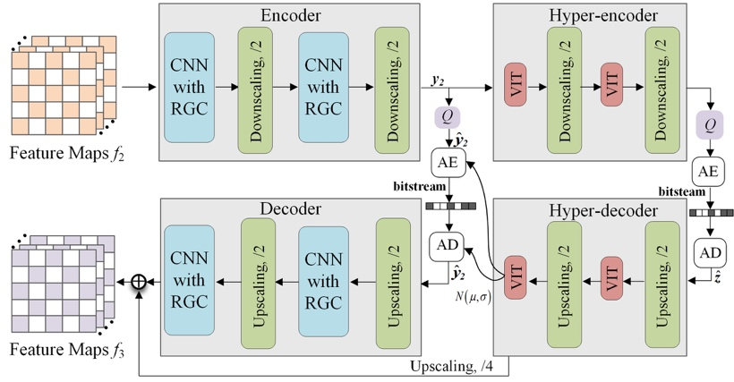
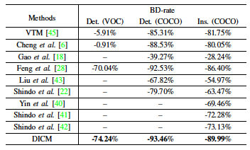
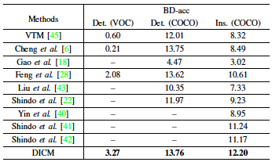

Towards Learned Image Compression for Multiple Semantic Analysis Tasks
Zhisen Tang, Xiaokai Yi and Hanli Wang
Overview:
Deep neural network (DNN)-based image compression methods have demonstrated superior rate-distortion performance compared to traditional codecs in recent years. However, most existing DNN-based compression methods only optimize signal fidelity at certain bitrate for human perception, neglecting to preserve the richness of semantics in compressed bitstream. This limitation renders the images compressed by existing deep codecs unsuitable for machine vision applications. To bridge the gap between image compression and multiple semantic analysis tasks, an integration of self-supervised learning (SSL) with deep image compression is proposed in this work to learn generic compressed representations, allowing multiple computer vision tasks to perform semantic analysis from the compressed domain. Specifically, the semantic-guided SSL under bitrate constraint is designed to preserve the semantics of generic visual features and remove the redundancy irrelevant to semantic analysis. Meanwhile, a compression network with high-order spatial interactions is proposed to capture long-range dependencies with low complexity to remove global redundancy. Without incurring decoding cost of pixel-level reconstruction, the features compressed by the proposed method can serve multiple semantic analysis tasks in a compact manner. The experimental results from multiple semantic analysis tasks confirm that the proposed method significantly outperforms traditional codecs and recent deep image compression methods in terms of various analysis performances at similar bitrates.
Method:
As shown in Fig. 1, the semantic-guided SSL is designed into image compression to achieve multiple semantic analyses using a single bitstream, referred to as DICM. Specifically, we first split ResNet-50 into two parts, namely backbone head and backbone tail, where the backbone head consists of the stem layer and layer 1 of ResNet-50, and the backbone tail is composed of the layer 2 to layer 4 of ResNet-50. Then, the proposed redundancy elimination (RE) module and compression network are embedded between the backbone head and the backbone tail to ensure the compactness of representations generated from ResNet-50. The backbone head is responsible for transforming the input image into low-dimensional features f1 with rich semantics and redundancy. Subsequently, the RE module is used as a bitrate constraint to preserve semantic information and discard redundancy irrelevant to the semantic analysis tasks. Thereafter, the features f2 output by the RE module are fed into the compression network to eliminate the global redundancy of learned features, making the visual features more compact. Finally, the compressed features f3 are input into the backbone tail to recover the semantic loss caused by the compression network, generating compact visual features with semantic fidelity to serve multiple machine vision applications. Meanwhile, to prevent SSL from selecting most false positives, the heatmap generated by the last convolutional layer of the backbone tail is used as semantic guidance and fed back to the input image to guide SSL to crop positives with semantic-aware localization.

Fig. 1 Overview of the proposed DICM framework.
The structure of RE is shown in Fig. 1, the RE module is mainly composed of an encoder_RE and a decoder_RE, which dynamically adjusts bitrate during SSL to eliminate redundancy irrelevant to semantic analysis. The architecture of encoder_RE/decoder_RE in the RE module is shown in Fig.2, where down/upscaling is added to ConvFormer block to build encoder_RE/decoder_RE. The encoder_RE and decoder_RE have the same structure, except that the downsampling of ConvFormer block in the encoder_RE is replaced by upscaling in decoder_RE.

Fig. 2 Illustration of the encoder_RE/decoder_RE.
In addition, the proposed compression network is shown in Fig.3, which is a VAE-based architecture including encoder, decoder, hyper-encoder and hyper-decoder. The encoder is composed of two CNNs with recursive gated convolution (RGC) and two downscaling layers. The settings of the decoder just mirror the encoder, with the two downscaling layers in the encoder replaced by two upscaling layers in the decoder to reconstruct compressed features. Additionally, similar to the encoder and the decoder, the hyper-encoder and the hyper-decoder are also a pair of networks with a mirrored relationship, which are filled with vision Transformer (VIT) and downscaling/upscaling layers to model the significant spatial dependencies of the output of the encoder.

Fig. 3 Illustration of compression network architecture.
Results:
To validate the effectiveness of the proposed DICM on the tasks of image classification, object detection and instance segmentation, it is compared with twelve recent learning-based image compression methods and two traditional coding standards BPG and VTM on the datasets of ImageNet, PASCAL VOC and COCO 2017. Table I and Table II list the BD-rate and BD-acc results of DICM and other competing compression schemes compared to the BPG anchor on the PASCAL VOC and COCO2017 datasets, respectively.
Table I BD-rate of DICM and other competing methods compared to BPG on PASCAL VOC and COCO 2017.

Table II BD-acc of DICM and other competing methods compared to BPG on PASCAL VOC and COCO 2017.

Source Code:
原站插图：图片暂留白DICM1.0.zip
Citation:
Please cite the following paper if you find this work useful:
Zhisen Tang, Xiaokai Yi, and Hanli Wang. Towards Learned Image Compression for Multiple Semantic Analysis Tasks, IEEE Transactions on Broadcasting, accepted, 2025.